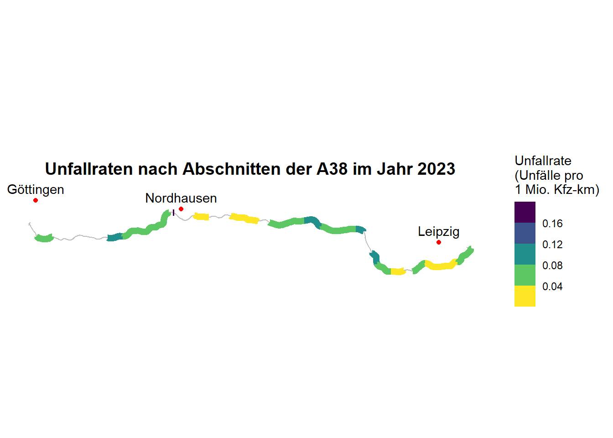
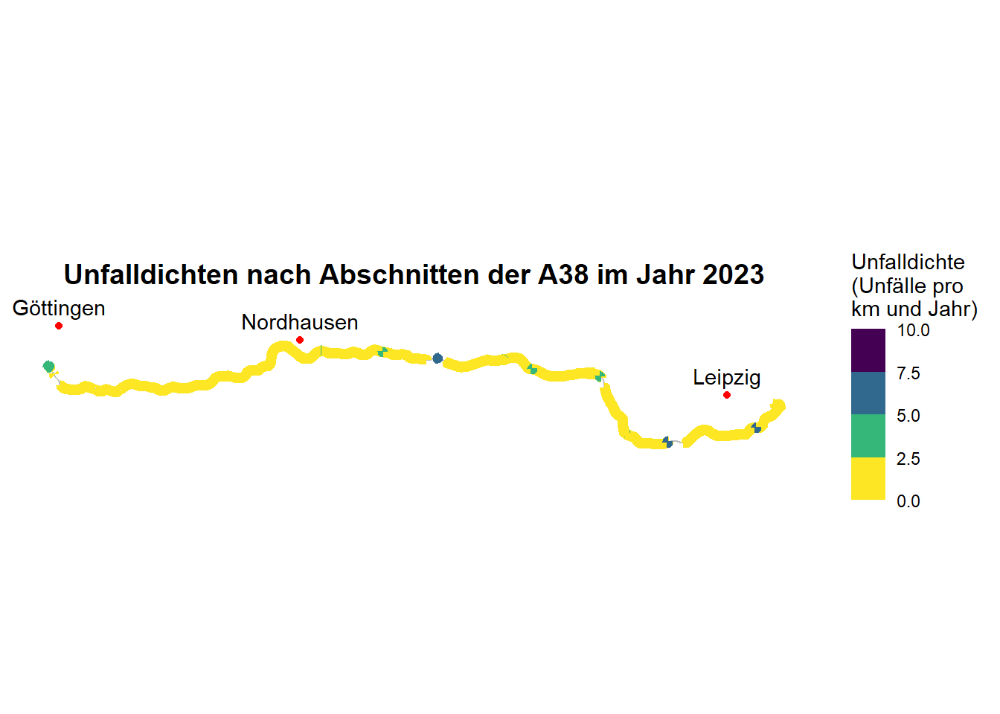
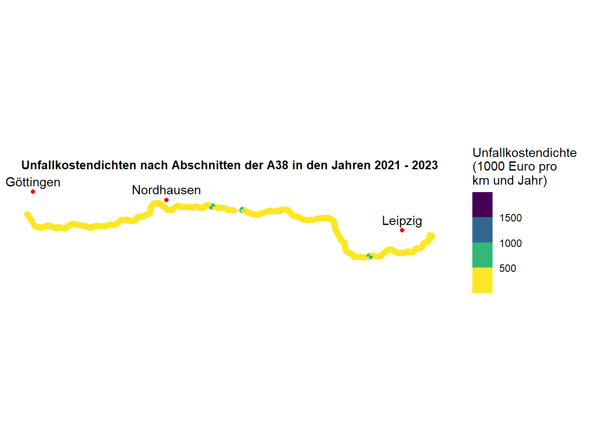
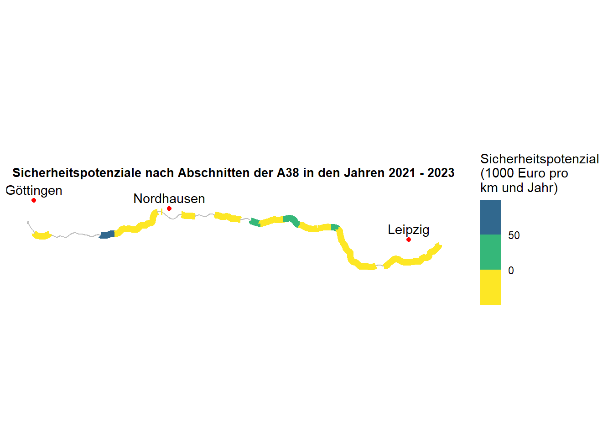

library(tidyverse)
library(kableExtra)
library(sf)
library(fs)
library(curl)3 Musterlösung mit Erläuterungen
3.1 Übungsaufgabe 1.1 : Anzahl der Verkehrsunfälle
Als frei wählbare Jahr wird 2023 gewählt und als frei wählbare Autobahn die A38.
Als erstes werden die Daten vom Unfallatlas heruntergeladen und in R geladen. Danach wird der Datensatz mit “st_as_sf” in ein räumliches Punktobjekt umgewandelt. Die Koordinaten stammen aus den Spalten “LINREFX” und “LINREFY”. Mit CRS (Coordinate Reference System) wird das Koordinatenreferenzsystem EPSG:25832 definiert. Falls sich in den geometrischen Daten noch Informationen zur Höhe (z-Dimension) oder Messwerte oder Attribute (m-Dimension) enthalten sind, werden diese nun entfernt, damit wir gleich sauber mit ihnen weiterrechnen können.
d_unfaelle_2023 = read_csv2("daten/Unfallorte2023_LinRef.csv") |>
st_as_sf(coords = c("LINREFX", "LINREFY"), crs = 25832) |>
st_zm()Als nächstes wird das Straßennetz der Bundesfernstraßen als Datensatz ins Projekt geladen. Diese Daten bekommen wir von der Bundesanstalt für Straßen- und Verkehrswesen (BASt). Das Bundesfernstraßennetz beinhaltet Daten zu Bundesautobahnen und Bundesstraßen. Aufgrund der Größe des Datensatzes kann dieser nicht auf Github zur Verfügung gestellt werden, daher fügen wir eine Funktion ein, die prüft, ob der Datensatz bereits im “daten”-Ordner liegt und falls nein, er direkt von der Webseite der BASt heruntergeladen, entpackt und an der richtigen Stelle gespeichert wird. Da für uns nur die Autobahnen relevant sind, filtern wir nur diese heraus. Wir wählen als Achse die Bestandsachse, da dies die mittlere Achse der Straße ist und wir keine Unterscheidung der Fahrtrichtung vornehmen müssen. Wir ergänzen eine Spalte (“mutate”) mit der Zeilennummer (brauchen wir gleich für die Unfälle). Auch hier entfernen wir potentielle Daten der z- oder m-Dimension.
if (!file_exists("daten/BFStr_Netz_v2025q3.gpkg")) {
curl_download("https://www.bast.de/SharedDocs/Daten-TB/Daten-BISStra.zip?__blob=publicationFile&v=5", destfile = "daten/Daten-BISStra.zip", quiet = FALSE)
unzip("daten/Daten-BISStra.zip", exdir = "daten/")
}
d_bfstn <- read_sf("daten/BFStr_Netz_v2025q3.gpkg") |>
filter(Str_Klasse_kurz == "A" & Sk_Achse == "Bestandsachse") |>
mutate(rownumber = row_number()) |>
st_zm()Den Unfalldaten soll nun aufgrund ihrer Lage in Deutschland der nächstgelegene Autobahnabschnitt und die Entfernung zu diesem hinzugefügt werden. “st_nearest_feature” gibt dabei die Zeilennummer des nächstgelegenen Autobahnabschnitts im Datensatz “d_bfstn” wieder. “st_distance” berechnet die Entfernung vom Unfallpunkt zum nächstgelegenen Autobahnabschnitt, dies kann unter Umständen länger dauern. Außerdem suchen wir mit “d_bfstn$Str_Kennung[abschnitt_id]” aus dem Datensatz “d_bfstn” und der Spalte “Str_Kennung” genau den Eintrag, dessen Zeile durch “abschnitt_id” angegeben wird. Damit bekommen wir statt einer Nummer eines Autobahnabschnittes den Namen der Autobahn (z.B. A1). Zudem wollen wir nur Unfälle, die auf Autobahnen passiert sind, berücksichtigen. Dafür filtern wir nach Unfällen, die in einem 20 m Umkreis zur Bestandsachse der Autobahnen sind. Die 20 m wählen wir, um fast alle Unfälle auf den Fahrbahnen, auch bei 6- oder 8-spurigen Autobahnen, einzuschließen und fast alle Unfälle daneben auszuschließen. Es gibt uns aber keine Garantie, dass alle Unfälle, die wir nun filtern, tatsächlich auf Autobahnen liegen. Den Unterschied des Filters sehen wir im Environment: Der Unfalldatensatz aus 2023 beinhaltet 269.048 Unfälle insgesamt, der Unfalldatensatz für Autobahnen nur noch 22.114. Für mehr Übersichtlichkeit vereinfachen wir unseren Datensatz und lassen uns mit “select” nur bestimmte Spalten anzeigen.
d_unfaelle_bab_2023 = d_unfaelle_2023 |>
mutate(
abschnitt_id = st_nearest_feature(geometry, d_bfstn),
distanz = st_distance(geometry, d_bfstn[abschnitt_id, ], by_element = TRUE),
name = d_bfstn$Str_Kennung[abschnitt_id]
) |>
filter(as.double(distanz) <= 20) |>
select(UKATEGORIE, name, abschnitt_id)todo: Nun folgt die tabellarische Darstellung. Mit “st_drop_geometry()” entfernen wir die Geometriespalte, da für die Auswertung in Tabellenform nur die Attributdaten benötigt werden. Anschließend gruppieren wir die Unfalldaten nach ihrer Kategorie (1, 2 oder 3) und berechnen mit “summarise” die Anzahl der Unfälle je Unfallkategorie, einmal für die Autobahn 38 und einmal für alle Autobahnen. Um eine weitere Zeile mit den Summen hinzufügen zu können, muss die Spalte zur Unfallkategorie in einen Zeichenvektor umgewandelt werden (“mutate(UKATEGORIE = as.character(UKATEGORIE))”). Die neue Zeile hängen wir mit “bind_rows()” an. Diese letzte Zeile der Spalte UKATEGORIE („Summe“) enthält nun die Gesamtanzahl aller Unfälle über alle Kategorien hinweg und dient als übersichtliche Gesamtsumme in der Ergebnistabelle. Nun benennen wir noch die Zeilennamen um. Mit “kable()” stellen wir die Tabelle dar und können ihr noch eine Überschrift hinzufügen.
d_zaehle_unfaelle <- d_unfaelle_bab_2023 |>
st_drop_geometry() |>
group_by(UKATEGORIE) |>
summarise(
A38 = sum(name == "A38"),
Autobahnen = n(),
.groups = "drop"
) |>
mutate(UKATEGORIE = as.character(UKATEGORIE))
tabelle_unfaelle <- d_zaehle_unfaelle |>
bind_rows(summarise(d_zaehle_unfaelle, UKATEGORIE = "Summe", across(c(A38, Autobahnen), sum))) |>
rename(Unfallkategorie = UKATEGORIE) |>
mutate(
Unfallkategorie = case_when(
Unfallkategorie == "1" ~ "Unfall mit Getöteten",
Unfallkategorie == "2" ~ "Unfall mit Schwerverletzten",
Unfallkategorie == "3" ~ "Unfall mit Leichtverletzten",
TRUE ~ Unfallkategorie
)
)
kable(
tabelle_unfaelle,
caption = "Anzahl der Verkehrsunfälle nach Unfallkategorie (A38 und alle deutschen Autobahnen) im Jahr 2023"
)| Unfallkategorie | A38 | Autobahnen |
|---|---|---|
| Unfall mit Getöteten | 8 | 282 |
| Unfall mit Schwerverletzten | 43 | 3739 |
| Unfall mit Leichtverletzten | 132 | 18093 |
| Summe | 183 | 22114 |
3.2 Übungsaufgabe 1.2 : Unfallkenngrößen auf Autobahnen
3.2.1 Die Unfallrate UR
“Die Unfallrate ist ein Maß für das (fahrleistungsbezogene) Risiko des Verkehrsteilnehmers, in einen Unfall verwickelt zu werden oder dabei zu verunglücken.” [@ESN2003, S. 5] Die Formel lautet
\[ UR = \frac{U \cdot 10^6}{DTV \cdot L \cdot 365 \cdot t} \] mit den Kenngrößen
- U: Anzahl der Unfälle
- DTV : durchschnittliche tägliche Verkehrsstärke in Kraftfahrzeugen pro 24 Stunden [Kfz/24h oder Kfz/d]
- L : untersuchte Streckenlänge [km]
- t : untersuchter Zeitraum [a].
Die DTV kann den Dauerzählstellen der BASt entnommen werden. Die Streckenlänge ist im Datensatz des Bundesfernstraßennetzes bereits enthalten.
Als erstes laden wir die Daten der Dauerzählstellen in unser Projekt. Mit dem Argument “locale(encoding =”iso-8859-1”)” stellen wir sicher, dass Umlaute und Sonderzeichen, die in deutschsprachigen Datensätzen häufig vorkommen, korrekt eingelesen werden. Da wir die Dauerzählstellen später mit dem Bundesfernstraßennetz verknüpfen möchten, berücksichtigen wir wie bei den anderen Datensätzen ausschließlich Autobahnen. Dazu filtern wir nach der Straßenklasse “Str_Kl ==”A”“. Anschließend entfernen wir mit”drop_na(DTV_Kfz_MobisSo_Q)” alle Beobachtungen, für die keine Verkehrsstärkewerte vorliegen, sodass nur vollständige und auswertbare Zählstellen verbleiben. Im nächsten Schritt wird der Datensatz in ein sf-Objekt umgewandelt. Aus den Koordinatenspalten “Koor_UTM32_E” und “Koor_UTM32_N” werden Punktgeometrien mit dem gleichen Koordinatensystem wie bei den anderen Datensätzen erzeugt. Dadurch sind spätere räumliche Operationen kompatibel. Wie auch bei den anderen räumlichen Datensätzen entfernen wir anschließend mögliche z- und m-Dimensionen aus den Geometrien. Im nächsten Schritt werden die Dauerzählstellen wie bei den Unfällen den nächstgelegenen Autobahnabschnitten des Bundesfernstraßennetzes zugeordnet. Mit “st_nearest_feature()” wird für jede Zählstelle der Index des nächstgelegenen Abschnitts ermittelt und als “abschnitt_id” gespeichert. Im Gegensatz zu den Unfalldaten müssen wir keine Entfernung zur Autobahn ermitteln, weil wir wissen, dass die Zählstellen tatsächlich an Autobahnen sind.
d_dzs_2023 <- read_csv2("daten/Jawe2023.csv", locale = locale(encoding = 'iso-8859-1')) |>
filter(Str_Kl == "A") |>
drop_na(DTV_Kfz_MobisSo_Q) |>
st_as_sf(coords = c("Koor_UTM32_E", "Koor_UTM32_N"), crs = 25832) |>
st_zm() |>
mutate(abschnitt_id = st_nearest_feature(geometry, d_bfstn))Bevor wir mit den Daten der Dauerzählstellen weiterrechnen, prüfen wir, ob jedem Autobahnabschnitt maximal eine Dauerzählstelle zugeordnet ist. In unserem Verständnis ist ein Autobahnabschnitt u.a. dadurch klassifiziert, dass in diesem keine Auffahrt oder Abfahrt vorhanden ist, daher würden zwei Zählstellen hier nur redundante DTV-Werte liefern. Bevor wir mit dieser Annahme weiterrechnen, kontrollieren wir sie.
d_dzs_2023 |>
st_drop_geometry() |>
group_by(abschnitt_id) |>
filter(n() > 1) |>
select(abschnitt_id, DZ_Nr, DTV_Kfz_MobisSo_Q)# A tibble: 2 × 3
# Groups: abschnitt_id [1]
abschnitt_id DZ_Nr DTV_Kfz_MobisSo_Q
<int> <chr> <dbl>
1 14490 6730 28566
2 14490 6831 45945Wir sehen, dass unsere Annahme falsch ist und es tatsächlich einen Abschnitt mit zwei Zählstellen gibt und beide auch tatsächlich unterschiedliches Verkehrsaufkommen gibt. Zwischen den Zählstellen scheint es also auch die Möglichkeit zu geben, auf die Autobahn auf- oder von ihr abzufahren. Daher fassen wir die Verkehrsstärken nun auf Abschnittsebene zusammen. Hierzu wird die Geometrie entfernt und wir berechnen den mittlere DTV-Wert (“mean”) von beiden Zählstellen je Abschnitt. Und auch bei diesem Datensatz reduzieren wir die Anzahl der Spalten für mehr Übersichtlichkeit.
d_dzs_abschnitt_2023 <- d_dzs_2023 |>
st_set_geometry(NULL) |>
group_by(abschnitt_id) |>
summarise(
DTV_2023 = mean(DTV_Kfz_MobisSo_Q, na.rm = TRUE),
.groups = "drop"
) |>
select(abschnitt_id, DTV_2023)3.2.1.1 Verbinden der Datensätze des Bundesfernstraßennetzes mit den Zählstellen und den Unfällen
Bisher haben wir allen Unfällen den nächstgelegenen Autobahnabschnitt und die Entfernung zu diesem zugewiesen. Nun wollen wir wissen, wie viele Unfälle es pro Abschnitt gibt. Das machen wir mit “group_by()” und “summarise()”. Außerdem benennen wir die Spalte “abschnitt_id” mit “rename()” in “abschnitt_id” um, damit wir die Datensätze gleich sauber verknüpfen können.
d_unfaelle_abschnitt_2023 <- d_unfaelle_bab_2023 |>
st_set_geometry(NULL) |>
group_by(abschnitt_id) |>
summarise(
d_unfaelle_2023 = n(),
.groups = "drop"
)Nun können wir alle drei Datensätze (Bundesfernstraßennetz der Autobahnen, (mittlere) DTV an Dauerzählstellen und Summe von Unfällen je Abschnitt) zu einem Datensatz zusammenfügen. Das machen wir mit “left_join()”. Zudem lassen wir uns die Länge der Abschnitte von Metern in Kilometer umrechnen.
d_bfstn_gesamt <- d_bfstn |>
mutate(abschnitt_id = row_number()) |>
mutate(laenge_km = as.numeric(Sk_Laenge_m)/1000) |>
left_join(d_dzs_abschnitt_2023, by = "abschnitt_id") |>
left_join(d_unfaelle_abschnitt_2023, by = "abschnitt_id") |>
select(Str_Kennung, laenge_km, DTV_2023, d_unfaelle_2023, abschnitt_id)3.2.1.2 Unfallraten berechnen
Als erstes legen wir unseren Zeitraum “t1” als 1 (Jahr) fest.
t1 = 1Anschließend fügen wir dem Datensatz mit “mutate()” eine weitere Spalte mit dem Namen “unfallrate” hinzu, deren Werte mit der Formel für die Unfallrate berechnet werden.
d_bfstn_gesamt <- d_bfstn_gesamt |>
mutate(unfallrate = d_unfaelle_2023 * 10^6 / (DTV_2023 * laenge_km * 365 * t1)) 3.2.1.3 Unfallraten auf der A38
Für unsere gewählte Autobahn 38 erstellen wir einen neuen Datensatz. Das erst so spät zu machen, ermöglicht uns, dass wir bei Bedarf recht einfach (z.B. mit Suchen und Ersetzen) unsere Auswahl verändern könnten oder uns auch alle Unfallraten auf allen deutschen Bundesautobahnen darstellen lassen könnten.
d_A38_gesamt <- d_bfstn_gesamt |>
filter(Str_Kennung == "A38")Nun kommen wir zur grafischen Darstellung. Wir wollen im Hintergrund den Verlauf der A38 sehen, daher filtern wir uns aus dem Datensatz der Bundesautobahnen “d_bfstn” die Autobahn 38. Außerdem wollen wir uns drei Städte entlang der A38 für mehr Kontext darstellen. Dafür suchen wir uns die Koordinaten der Städte aus dem Internet. Diese sind allerdings in dem Koordinatenreferenzsystem 4326, daher transformieren (“st_transform”) wir sie in das CRS der anderen Daten (25832). In unserem ggplot stellen wir nun den Verlauf der A38 (“data = d_A38”) und die Städte (“data = d_staedte”) dar und beschriften die Städte mit “geom_sf_text()”. Und nun kommen endlich die Daten der Unfallraten. Diese filtern wir, dass nur Abschnitte mit Werten angezeigt werden (“filter(!is.na())”). Das machen wir erst hier und nicht schon eher, um die Zeilen nicht grundsätzlich aus dem Datensatz entfernen wollen, weil wir damit noch weiterrechnen. Für die Barrierefreiheit nutzen wir die Farbskala “scale_color_viridis_b” und beschriften unser Diagramm.
d_A38 <- d_bfstn |> filter(Str_Kennung == "A38")
d_staedte <- st_as_sf(
tibble::tribble(
~stadt, ~lat, ~lon,
"Leipzig", 51.3402, 12.3601,
"Nordhausen", 51.5018, 10.7957,
"Göttingen", 51.5455, 9.9055,
),
coords = c("lon", "lat"),
crs = 4326
) |>
st_transform(25832)
ggplot () +
geom_sf(data = d_A38, colour = "grey", size = 0.4) +
geom_sf(data = d_staedte, color = "red") +
geom_sf_text(data = d_staedte, aes(label = stadt), nudge_y = 5000) +
geom_sf(
data = d_A38_gesamt |> filter(!is.na(unfallrate)),
size = 2.5,
mapping = aes(color = unfallrate)
) +
scale_color_viridis_b(direction = -1, name = "Unfallrate\n(Unfälle pro\n1 Mio. Kfz-km)") +
labs(title = "Unfallraten nach Abschnitten der A38 im Jahr 2023") +
theme_minimal() +
theme(
panel.grid = element_blank(),
plot.title = element_text(size = 14, face = "bold", hjust = 0.5),
axis.title = element_blank(),
axis.text = element_blank(),
axis.ticks = element_blank()
)
Wir sehen, dass viele Abschnitte eine Unfallrate von unter 0,12 Unfällen pro 1 Million Kfz-km aufweisen. Der (sehr schmale) Abschnitt bei Nordhausen zeigt hingegen eine Unfallrate von über 0,16 Unfällen pro 1 Million Kfz-km. Ein Blick in den Datensatz zeigt uns, dass dieser Abschnitt nur 585 Meter lang ist. Dadurch fallen einzelne Unfälle dort deutlich stärker ins Gewicht. Bei der Interpretation unserer Ergebnisse müssen wir daher stets unseren technischen Sachverstand einbringen und die Ergebnisse in den jeweiligen Kontext einordnen.
3.2.2 Die Unfalldichte UD
“Die [Unfalldichte] ist ein Maß für die (längenbezogene) Häufigkeit, mit der sich Unfälle während eines bestimmten Zeitraums auf einem bestimmten Straßenabschnitt ereignet haben” [@ESN2003, S. 6]. Dementsprechend lautet die Formel:
\[ UD = \frac{U}{L \cdot t} \]
Da wir schon viel Vorarbeit geleistet haben, können wir zur Berechnung der Unfalldichte unserem Datensatz einfach eine weitere Spalte mit dem Namen “unfalldichte” und der Formel zur Berechnung der Unfalldichte hinzufügen.
d_bfstn_gesamt <- d_bfstn_gesamt |>
mutate(unfalldichte = d_unfaelle_2023 / (laenge_km * t1)) Auch für die Unfalldichte schauen wir uns unsere ausgewählte Autobahn 38 an.
d_A38_gesamt <- d_bfstn_gesamt |>
filter(Str_Kennung == "A38")Die grafische Darstellung übernehmen wir von der Unfallrate und tauschen nur die Variablen und die Beschriftungen aus. Jedoch ergänzen wir noch Grenzen bei der Beschriftung, da uns die Darstellung damit besser gefällt.
ggplot () +
geom_sf(data = d_A38, colour = "grey", size = 0.4) +
geom_sf(data = d_staedte, color = "red") +
geom_sf_text(data = d_staedte, aes(label=stadt), nudge_y = 5000) +
geom_sf(
data = d_A38_gesamt |> filter(!is.na(unfalldichte)),
size = 2.5,
mapping = aes(color = unfalldichte)
) +
scale_color_viridis_b(direction = -1, limits = c(0, 10), name = "Unfalldichte\n(Unfälle pro\nkm und Jahr)") +
labs(title = "Unfalldichten nach Abschnitten der A38 im Jahr 2023") +
theme_minimal() +
theme(
panel.grid = element_blank(),
plot.title = element_text(size = 14, face = "bold", hjust = 0.5),
axis.title = element_blank(),
axis.text = element_blank(),
axis.ticks = element_blank()
)
Im Gegensatz zur Unfallrate sehen wir deutlich mehr farbige Abschnitte. Das liegt daran, dass die Unfalldichte unabhängig von der DTV ist und wir daher auch Abschnitte ohne Zählstellen darstellen können. Die große Mehrheit der Abschnitte hat eine Unfalldichte von unter 2,5 Unfällen pro Kilometer und Jahr. Wir sehen aber auch hier die Auswirkung von kurzen Abschnitten, diese haben tendenziell höhere Unfalldichten als längere Abschnitte.
3.2.3 Die Unfallkostenrate UKR
“Unfallkostenraten UKR beschreiben die entsprechenden durchschnittlichen volkswirtschaftlichen Kosten durch Straßenverkehrsunfälle, die bei einer Fahrleistung von 1000 Kfz-km in diesem Straßenabschnitt entstanden sind.” [@ESN2003, S. 5]. Die Formel lautet entsprechend:
\[ UKR = \frac{1000 \cdot UK}{365 \cdot DTV \cdot L \cdot t} \]
Die Unfallkosten UK werden über einen Betrachtungszeitraum von drei Jahren berechnet. Je nachdem, welche Unfalldaten vorliegen, werden unterschiedliche Formeln angewandt. Da aus dem Unfallatlas nur Unfälle mit Personenschaden und keine mit Sachschäden zur Verfügung stehen, wird die folgende Formel verwendet:
\[ UK = U(SP) * WU(SP) + U(LV) * WU(LV) \]
mit
- U(SP) : Unfälle mit schwerem Personenschaden (Schwerverletzte und Getötete)
- WU(SP) : Unfallkostensatz von Unfällen mit schwerem Personenschaden
- U(LV) : Unfälle mit leichtem Personenschaden
- WU(LV) : Unfallkostensatz von Unfällen mit leichtem Personenschaden
Die Unfallkostensätze werden den Empfehlungen für die Sicherheitsanalyse von Straßennetzen [@ESN2003] entnommen.
3.2.3.1 Schritt 1: Unfalldaten
Als erstes werden die Unfalldaten der Jahre 2023, 2022 und 2021 in das Projekt geladen, mit “bind_rows” zusammengefügt und aufbereitet (analog zur Aufbereitung der Unfalldaten in 2023 am Anfang).
d_unfaelle_alle <- bind_rows(
read.csv2("daten/Unfallorte2023_LinRef.csv") |> mutate(jahr = 2023),
read.csv2("daten/Unfallorte2022_LinRef.csv") |> mutate(jahr = 2022),
read.csv2("daten/Unfallorte2021_LinRef.csv") |> mutate(jahr = 2021),
) |>
st_as_sf(coords = c("LINREFX", "LINREFY"), crs = 25832) |>
st_zm()Wie auch bei den Unfalldaten aus 2023 fügen wir den Unfalldaten den nächstgelegenen Autobahnabschnitt und die Entfernung zu diesem hinzu und filtern nach allen Unfällen, die maximal 20 Meter von einem Autobahnabschnitt entfernt sind.
d_unfaelle_bab_alle <- d_unfaelle_alle |>
mutate(
abschnitt_id = st_nearest_feature(geometry, d_bfstn),
distanz = st_distance(geometry, d_bfstn[abschnitt_id, ], by_element = TRUE),
name = d_bfstn$Str_Kennung[abschnitt_id]
) |>
filter(as.double(distanz) <= 20) |>
select(UKATEGORIE, name, abschnitt_id, jahr)Ebenfalls wie bei den Unfalldaten aus 2023 fassen wir die Unfalldaten je Abschnitt zusammen. Da wir gleich für die Unfallkosten aber auch die Unfallkategorie berücksichtigen werden, gruppieren wir nicht nur nach Abschnitten, sondern auch nach den Unfallkategorien.
d_unfaelle_abschnitt_alle <- d_unfaelle_bab_alle |>
st_set_geometry(NULL) |>
group_by(abschnitt_id, UKATEGORIE) |>
summarise(
Unfaelle = n(),
.groups = "drop"
) Nun wollen wir wissen, wie viele schwere und leichte Unfälle es je Abschnitt gibt. Schwere Unfälle sind Unfälle mit Schwerverletzten (Kategorie 2) und Getöteten (Kategorie 1). Leichte Unfälle sind die Unfallkategorie 3. Dazu filtern wir nach der oder den jeweiligen Kategorie, gruppieren nach Abschnitten und summieren die Unfallzahlen.
d_unfaelle_sp_3j <- d_unfaelle_abschnitt_alle |>
filter(UKATEGORIE %in% c(1, 2)) |>
group_by(abschnitt_id) |>
summarise(
unfaelle_sp_summe_3j = sum(Unfaelle, na.rm = TRUE),
.groups = "drop"
)
d_unfaelle_lv_3j <- d_unfaelle_abschnitt_alle |>
filter(UKATEGORIE == 3) |>
group_by(abschnitt_id) |>
summarise(
unfaelle_lv_summe_3j = sum(Unfaelle, na.rm = TRUE),
.groups = "drop"
)Diese beiden neuen Datensätze fügen wir als Spalten zu einem gemeinsamen Datensatz zusammen. Dabei ergänzen wir noch, dass wenn es keine Unfälle gibt, nicht “NA” in der Zelle steht, sondern 0, da das hier im Sachzusammenhang sinnvoll ist und wir dann später besser damit rechnen können.
d_unfaelle_gesamt <- d_unfaelle_sp_3j |>
full_join(d_unfaelle_lv_3j, by = "abschnitt_id") |>
mutate(
unfaelle_sp_summe_3j = replace_na(unfaelle_sp_summe_3j, 0),
unfaelle_lv_summe_3j = replace_na(unfaelle_lv_summe_3j, 0)
)Die Unfalldaten nach Abschnitten aus den drei beobachteten Jahren fügen wir nun dem großen Datensatz hinzu.
d_bfstn_gesamt <- d_bfstn_gesamt |>
mutate(abschnitt_id = row_number()) |>
left_join(d_unfaelle_gesamt, by = "abschnitt_id") |>
select(Str_Kennung, laenge_km, DTV_2023, d_unfaelle_2023, abschnitt_id, laenge_km, unfallrate, unfalldichte, unfaelle_sp_summe_3j, unfaelle_lv_summe_3j)3.2.3.2 Schritt 2: Dauerzählstellen
Auch bei den Dauerzählstellen beginnen wir wieder mit dem laden, zusammenführen und aufbereiten der Daten. Dabei achten wir auf die richtige Encodierung.
d_dzs_alle <- bind_rows(
read_csv2("daten/Jawe2023.csv", locale = locale(encoding = 'iso-8859-1')) |> mutate(jahr = 2023),
read_csv2("daten/Jawe2022.csv", locale = locale(encoding = 'iso-8859-1')) |> mutate(jahr = 2022),
read_csv2("daten/Jawe2021.csv", locale = locale(encoding = 'iso-8859-1')) |> mutate(jahr = 2021),
) |>
st_as_sf(coords = c("Koor_UTM32_E", "Koor_UTM32_N"), crs = 25832) |>
st_zm()Auch im nächsten Schritt gehen wir wie am Anfang vor, filtern nach Zählstellen auf Autobahnen, ignorieren Zählstellen ohne Zähldaten, achten auf das richtige CRS und fügen eine Spalte zum nächstgelegenen Autobahnabschnitt hinzu.
d_dzs_bab_alle <- d_dzs_alle|>
filter(Str_Kl == "A") |>
drop_na(DTV_Kfz_MobisSo_Q) |>
mutate(abschnitt_id = st_nearest_feature(geometry, d_bfstn))Nun fassen wir die DTV-Daten auf Abschnittsebene zusammen und bilden Mittelwerte der DTV.
d_dzs_abschnitt_alle <- d_dzs_bab_alle |>
st_set_geometry(NULL) |>
group_by(abschnitt_id) |>
summarise(DTV = mean(DTV_Kfz_MobisSo_Q, na.rm = TRUE))Im Gegensatz zu den Unfalldaten, die aufsummiert werden, wird methodisch bei der durchschnittlichen täglichen Verkehrsstärke der Mittelwert je Abschnitt gebildet.
d_dzs_gesamt <- d_dzs_abschnitt_alle |>
group_by(abschnitt_id) |>
summarise(
dtv_mittelwert_3j = round(mean(DTV, na.rm = TRUE)),
.groups = "drop"
)Nun können wir die DTV-Daten dem Datensatz des Bundesfernstraßennetzes hinzufügen.
d_bfstn_gesamt <- d_bfstn_gesamt |>
left_join(d_dzs_gesamt, by = "abschnitt_id")3.2.3.3 Schritt 3: Unfallkostensätze definieren
Die Unfallkostensätze werden nach den ESN [@ESN2003] definiert. Dabei wird für die schweren Personenunfälle der Mittelwert aus den Bundesländern Sachsen, Sachsen-Anhalt, Thüringen, Niedersachsen gebildet, da die A38 durch diese vier Bundesländer verläuft. Die Länge je Bundesland wird hierbei außer Acht gelassen.
WU_SP_bab = 325000
WU_LV_bab = 31000
t2 = 33.2.3.4 Schritt 4: Unfallkostenraten berechnen
Wie bei der Unfallrate und -dichte fügen wir nun eine Spalte zur Unfallkostenrate dem großen Datensatz hinzu. Dafür nutzen wir einen Zwischenschritt und erstellen uns erst noch eine Spalte zu den Unfallkosten.
d_bfstn_gesamt <- d_bfstn_gesamt |>
mutate(
unfallkosten = unfaelle_sp_summe_3j * WU_SP_bab + unfaelle_lv_summe_3j * WU_LV_bab ,
unfallkostenrate = (1000*unfallkosten)/(365*dtv_mittelwert_3j*laenge_km*t2)
)3.2.3.5 Schritt 5: Ausgewählte Autobahn
d_A38_gesamt <- d_bfstn_gesamt |>
filter(Str_Kennung == "A38")3.2.3.6 Schritt 6: Grafische Darstellung
ggplot () +
geom_sf(data = d_A38, colour = "grey", size = 0.4) +
geom_sf(data = d_staedte, color = "red") +
geom_sf_text(data = d_staedte, aes(label=stadt), nudge_y = 5000) +
geom_sf(
data = d_A38_gesamt |> filter(!is.na(unfallkostenrate)),
size = 2.5,
mapping = aes(color = unfallkostenrate)
) +
scale_color_viridis_b(direction = -1, name = "Unfallkostenrate\n(Euro pro\n1000 Kfz und km und Jahr)") +
labs(title = "Unfallkostenraten nach Abschnitten der A38 in den Jahren 2021 - 2023") +
theme_minimal() +
theme(
panel.grid = element_blank(),
plot.title = element_text(size = 10, face = "bold", hjust = 0.5),
axis.title = element_blank(),
axis.text = element_blank(),
axis.ticks = element_blank()
)
Wir sehen, dass viele Abschnitte eine Unfallkostenrate von unter 15 Euro pro 1000 Kfz und km und Jahr haben. Auffällig ist ein Abschnitt zwischen Nordhausen und Göttigen. Ein Blick in den Datensatz verrät, dass es hier innerhalb der drei beobachteten Jahre 10 schwere und 4 leichte Unfälle auf etwa 6,5 km Länge und bei etwa 22.000 Kfz pro Tag gab.
3.2.4 Unfallkostendichte UKD
Die Unfallkostendichte UKD beschreibt “die mittleren volkswirtschaftlichen Kosten durch Straßenverkehrsunfälle, die auf 1 km Länge des Straßenabschnittes entfallen” [@ESN2003, S. 6].
Die Formel lautet:
\[ UKD = \frac{UK}{1000 \cdot L \cdot t} \]
Da die Unfallkosten bereits berechnet sind, ist die Berechnung der Unfallkostendichte nun schneller.
d_bfstn_gesamt <- d_bfstn_gesamt |>
mutate(unfallkostendichte = unfallkosten/(1000*laenge_km*t2))d_A38_gesamt <- d_bfstn_gesamt |>
filter(Str_Kennung == "A38")ggplot () +
geom_sf(data = d_A38, colour = "grey", size = 0.4) +
geom_sf(data = d_staedte, color = "red") +
geom_sf_text(data = d_staedte, aes(label=stadt), nudge_y = 5000) +
geom_sf(
data = d_A38_gesamt |> filter(!is.na(unfallkostendichte)),
size = 2.5,
mapping = aes(color = unfallkostendichte)
) +
scale_color_viridis_b(direction = -1, name = "Unfallkostendichte\n(1000 Euro pro\nkm und Jahr)") +
labs(title = "Unfallkostendichten nach Abschnitten der A38 in den Jahren 2021 - 2023") +
theme_minimal() +
theme(
panel.grid = element_blank(),
plot.title = element_text(size = 10, face = "bold", hjust = 0.5),
axis.title = element_blank(),
axis.text = element_blank(),
axis.ticks = element_blank()
)
3.2.5 Sicherheitspotenzial SIPO
“Das Sicherheitspotenzial SIPO eines Straßenabschnittes ist definiert als Unterschied zwischen den Unfallkosten (Anzahl und Schwere der Unfälle), die bei richtliniengerechtem Ausbau zu erwarten wären, und den vorhandenen Unfallkosten. […] Kenngröße für das Sicherheitspotenzial SIPO ist die Differenz zwischen der vorhandenen Unfallkostendichte UKD eines Netzabschnittes im Betrachtungszeitraum und der Grundunfallkostendichte gUKD.” [@ESN2003, S. 8f.]
\[ SIPO = UKD - gUKD \]
Die Grundunfallkostendichte gUKD wird mit der folgenden Formel berechnet:
\[ gUKD = \frac{gUKR \cdot DTV \cdot 365}{10^6} \]
mit der Grundunfallkostenrate gUKR, die den ESN [@ESN2003] zu entnehmen ist.
gUKR_bab = 11Wir fügen wie bei den vorherigen Kenngrößen neue Spalten mit den Berechnungen hinzu.
d_bfstn_gesamt <- d_bfstn_gesamt |>
mutate(
gUKD = (gUKR_bab * dtv_mittelwert_3j * 365)/10^6,
sicherheitspotenzial = unfallkostendichte - gUKD
)Und filtern nach unserer Beispielautobahn.
d_A38_gesamt <- d_bfstn_gesamt |>
filter(Str_Kennung == "A38")ggplot () +
geom_sf(data = d_A38, colour = "grey", size = 0.4) +
geom_sf(data = d_staedte, color = "red") +
geom_sf_text(data = d_staedte, aes(label=stadt), nudge_y = 5000) +
geom_sf(
data = d_A38_gesamt |> filter(!is.na(sicherheitspotenzial)),
size = 2.5,
mapping = aes(color = sicherheitspotenzial)
) +
scale_color_viridis_b(direction = -1, breaks = c(0, 50, 100), name = "Sicherheitspotenzial\n(1000 Euro pro\nkm und Jahr)") +
labs(title = "Sicherheitspotenziale nach Abschnitten der A38 in den Jahren 2021 - 2023") +
theme_minimal() +
theme(
panel.grid = element_blank(),
plot.title = element_text(size = 10, face = "bold", hjust = 0.5),
axis.title = element_blank(),
axis.text = element_blank(),
axis.ticks = element_blank()
)
Ein Sicherheitspotenzial, dass kleiner gleich 0 ist, bedeutet, dass die Unfallkostendichte geringer als oder gleich der Grundunfallkostendichte ist. Das heißt, dass hier weniger (schwere) Unfälle aufgetreten sind, als aufgrund des Ausbaus zu erwarten wären. Das ist also etwas positives, hier gibt es (zumindest für den beobachteten Zeitraum) wenig Handlungsdruck. Je größer das Sicherheitspotenzial ist, desto mehr Bedarf besteht, die Infrastruktur sicherer zu gestalten. In unserer Grafik ist das vor allem der Abschnitt zwischen Nordhausen und Göttingen (SIPO zwischen 50 und 100), der schon bei der Unfallkostenrate auffällig war, sowie drei Abschnitte zwischen Nordhausen und Leipzig die ein Sicherheitspotential zwischen 0 und 50 haben.